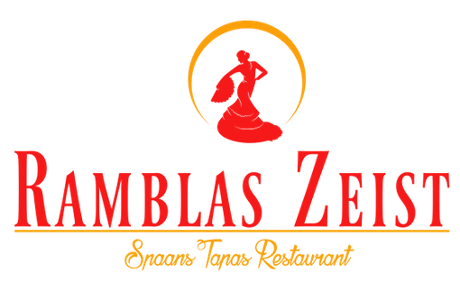
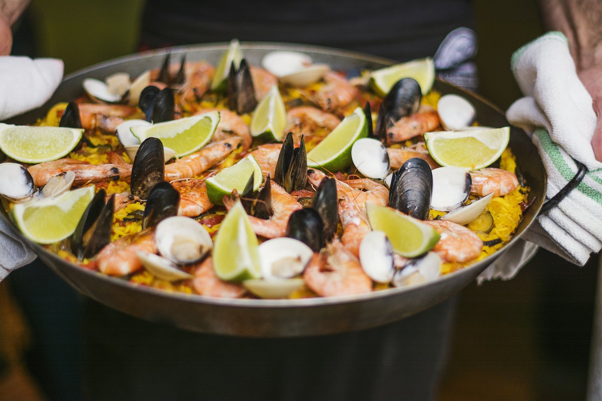

Verrassingsmenu
Onze chefkok stelt 8 koude en 8 warme tapas voor je samen. Alles wat je lekker vindt, bestel je onbeperkt bij. Groepen vanaf 7 personen laten we altijd verrassen, tenzij je ons laat weten dat je liever zelf kiest.

ReserverenSpaans tapasrestaurant in de binnenstad van Zeist
Koude en warme tapas zoveel je wilt, een glas zelfgemaakte sangria erbij en geen klok die meetelt. Blijf zolang je wilt.
per persoon, drankjes niet inbegrepen

Valt een feestdag op maandag? Dan zijn we ook open.
Je begint altijd met brood met alioli. Daarna kies je hoe de avond verloopt.
Onze chefkok stelt 8 koude en 8 warme tapas voor je samen. Alles wat je lekker vindt, bestel je onbeperkt bij. Groepen vanaf 7 personen laten we altijd verrassen, tenzij je ons laat weten dat je liever zelf kiest.
Je bestelt per ronde maximaal 2 tapas per persoon van de kaart, zo vaak als je wilt. Allergieën of andere wensen? Geef het door, de chefkok houdt er rekening mee.
| Dinsdag, woensdag, donderdag | € 27,95 |
|---|---|
| Vrijdag, zaterdag, zondag | € 32,95 |
| Kinderen 4 t/m 10 jaar | € 13,95 |
| Kinderen 0 t/m 3 jaar | gratis |
Ramblas leent zich voor groepslunches en -diners, bruiloften, jubileumfeesten, verjaardagen, recepties, bedrijfspresentaties, vergaderingen, bedrijfsuitjes en personeelsfeesten. Je kunt kiezen uit onze tapaskaart, of we stellen samen een arrangement op maat samen. Laat je ook eens verrassen door onze koks.
Het restaurant en het terras zijn allebei af te huren voor je eigen evenement.
Vraag een offerte aan
Ramblas is een Spaans tapasrestaurant op loopafstand van Slot Zeist. Via de vrolijke voorkant met terras proef en ruik je bij binnenkomst meteen de Spaanse sfeer: veel kleur, een zonnige uitstraling en Spaanse muziek.
Onze chefs werken met verse ingrediënten van goede kwaliteit. Voor vegetarische gasten zijn er elke dag wisselende vegetarische hapjes. Of je nu komt voor een romantisch diner voor twee, een avond met vrienden of met een grote groep: bij ons is tapas lang tafelen, met familie en vrienden.
“Tapas” komt van tapar, afdekken. In Spanje zette men een schoteltje met een hapje op het glas, zodat er geen vliegen of stof in kwamen. Inmiddels is het een manier van samen eten geworden.
Reserveren gaat het snelst telefonisch. We zijn bereikbaar van dinsdag t/m zondag vanaf 14:00 uur.